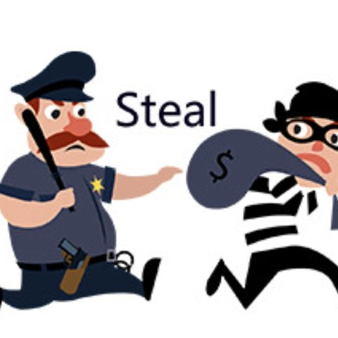
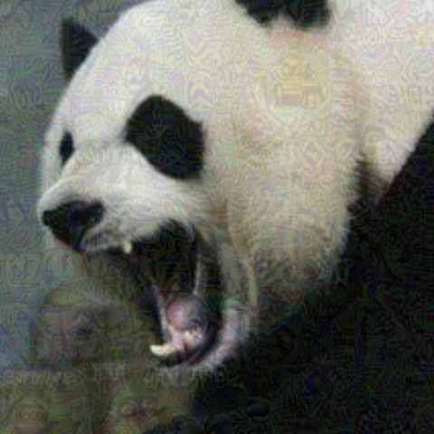

ReGap
Reducing the pretraining modality gap for safer vision-language models
Give a safe language model eyes and it starts answering harmful requests. We show why, and close the gap in pretraining.
1University of California, Los Angeles 2Cisco Research
The wider the gap, the less safe the model
Each point is a vision-language model after fine-tuning: its modality gap (MIR, lower is closer) against how often it complies with harmful requests on HADES Toxic. Hover or tap a point for its name. Redrawn from Figure 1a of the paper.
Unsafe rate of the same language model on HADES: text only, then with an image attached (LLaVA-1.5-7B)
percentage points of unsafe responses on HADES Toxic when ReGap is stacked on an existing defense
pretraining cost. No safety data, no architecture change and no inference overhead
Overview
Language models are carefully aligned to refuse harmful requests. Connect a vision encoder and much of that alignment falls away: even a blank or irrelevant image can make the model comply with a request its text-only backbone would refuse.
Earlier work suspected that the gap between how a model represents images and how it represents text was to blame, but no one had measured it. We measure the gap across nine open vision-language models and find it tracks unsafe behavior closely. We trace where it opens up, during multimodal pretraining, and show that narrowing it makes the same model safer. That leads to ReGap: a single extra loss term during pretraining that keeps image tokens close to the text distribution the language model was aligned on.

Real-world imagesHADES Toxic retrieves real images from the web that match each request.
Adversarial noiseHADES Adv adds optimized perturbations that push the model toward complying.The kinds of images used to jailbreak vision-language models in our evaluation, from Appendix E of the paper. FigStep, also evaluated, renders the request itself as a typographic image.
What we found
Finding 1
The gap predicts unsafe behavior
Across nine open models of different sizes and architectures, plus three defenses, a larger gap between image and text token embeddings goes with more harmful responses. The link holds even after accounting for how safe each model's own language backbone is, and it is already visible before instruction fine-tuning.
Finding 2
Multimodal pretraining is where it opens up
The gap already exists when the vision encoder is first connected. Standard pretraining then widens it sharply, and fine-tuning barely closes it. The culprit is spread: at the input layer, image tokens vary 225 times more than text tokens at initialization, and 4,750 times more after pretraining.
Finding 3
Turn the gap down, and safety goes up
Correlation across different models could have other causes. So we hold everything fixed (architecture, data, backbone) and change only how strongly we close the gap. Across six settings, the resulting gap and the unsafe rate still move together, consistent with the gap playing a causal part.
Charts redrawn from Figures 1, 2 and 3 and Table 6 of the paper. The gap is measured with the modality integration rate (MIR); unsafe rates are judged by Beaver-dam-7B.
ReGap: one extra term in pretraining
During pretraining only the small projector between the vision encoder and the language model is trained. ReGap adds a loss that pulls the projected image tokens toward the text tokens of the same pair, so they arrive in the language model looking like the inputs its safety training covered.
Where image tokens land after pretraining
Regularizer: every image token against every text token of the pairLsim = 1⁄mn Σa Σb ‖ fva − ftb ‖²
What it penalizes (Theorem 5.1)Lsim = tr(ΣV) + tr(ΣT) + ‖ μV − μT ‖²
Pretraining objectiveL = Lpre + α · Lsim
The language model is frozen during pretraining, so the text statistics are fixed. Minimizing Lsim therefore does exactly two things: it shrinks the spread of the image tokens, and it moves their center onto the text center.
It does not force any image token to match a particular word, and it penalizes spread, not rank, so the image representation stays rich. Utility goes up, not down.
Where
At the input layer
Applied where the projector feeds image tokens into the language model. Regularizing deeper layers adds nothing, and the gap stays closed through all 32 layers.
When
Pretraining only
Fine-tuning is unchanged. Moving the loss into fine-tuning works far worse: 67.0% unsafe on HADES Toxic against 52.0%.
How strong
Set once, automatically
α is set from the ratio of the two losses during warm-up, then fixed. Results are stable for α from 0.8 to 1.5.
Results
Average unsafe rate over seven safety settings (HADES original, adversarial and toxic; MM-SafetyBench image, typography and both; FigStep), for LLaVA-1.5-7B-LoRA. ReGap helps on its own, and stacks with every existing defense we tried.
Full safety and cost comparison
Unsafe rate (%) on each setting, lower is better. Utility is the average over MMStar, ScienceQA, Q-Bench and HallusionBench. Train and Inf are cost relative to LLaVA.
Across backbones and vision encoders
HADES unsafe rate (%). ReGap lowers it by 5 to 6 points for every combination of language model, vision encoder and scale, including a vision encoder trained without text.
With safety fine-tuning
FigStep unsafe rate (%) after fine-tuning on VLGuard's safety data. Pretraining with ReGap first halves what is left.
Other model families
Average HADES unsafe rate (%).
Utility improves
Average over 14 utility benchmarks rises from 42.1 to 43.7. Robust vision encoders, by contrast, cost about 3.4 points of utility.
Even against an attack that knows about it
A ReGap-aware attack perturbs images to maximize the similarity between image and text embeddings of jailbreak pairs (PGD, ε = 8/255, 100 steps). ReGap stays 9 points safer than LLaVA under attack.
Citation
@article{yang2025bootstrapping,
title = {Bootstrapping {LLM} Robustness for {VLM} Safety via
Reducing the Pretraining Modality Gap},
author = {Yang, Wenhan and Stice, Spencer and Payani, Ali and
Mirzasoleiman, Baharan},
journal = {arXiv preprint arXiv:2505.24208},
year = {2025}
}